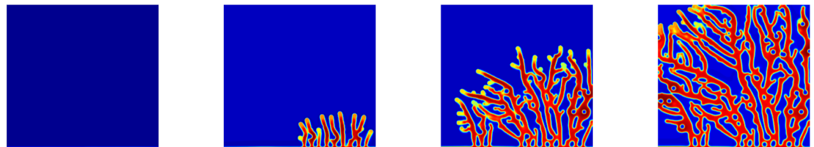
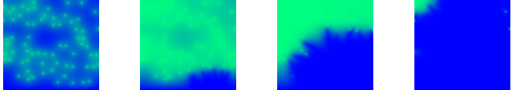

I am a physicist trying to understand life through computational biology. I work on the development of mathematical models to describe biological systems, such as: the growing of new blood vessels, cell migration and collective phenomena. For this purpose I employ the laws of physics to the microscopic world studying how mechanical forces affect cells.
As a matter of fact, the study of biological systems require an interdisciplinary approach, bringing together not only physics and biology, but also computer science, biochemistry, mathematics, among others. As result of this scientific community effort, new high quality studies are constantly been published with breakthroughs in health science and systems biology, contributing to improve our knowledge on these challenging fields.
 